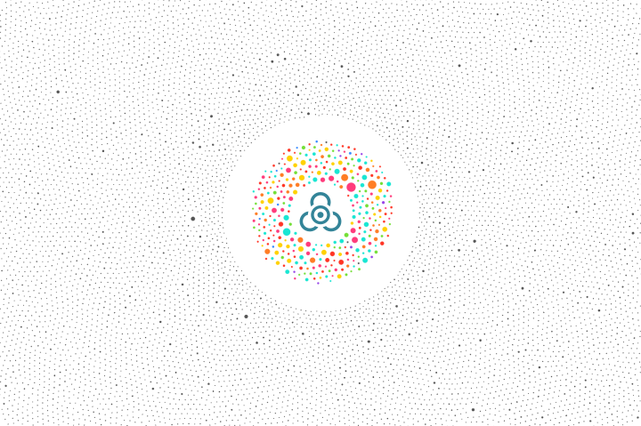
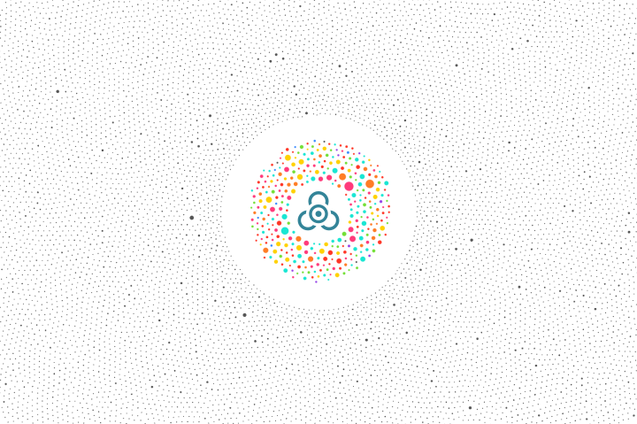
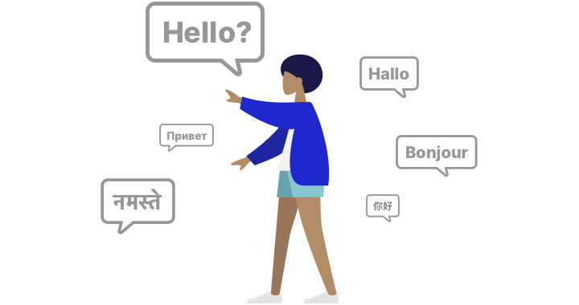
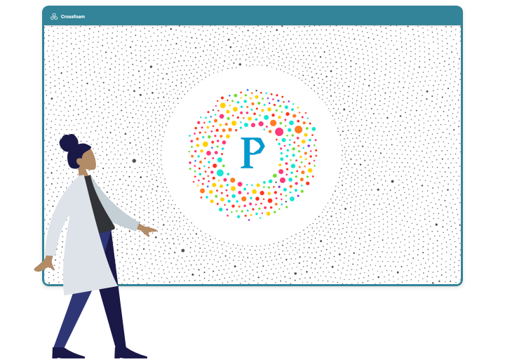
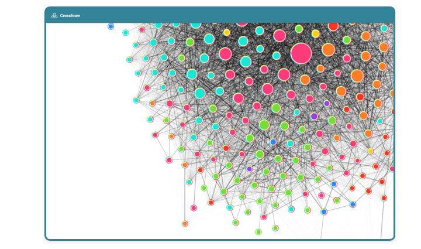

Crossfoam
Crossfoam turns filter bubbles into lenses on the public. In its current prototype form, crossfoam is a browser plugin to visualise and utilise your filter bubbles on Twitter.
Crossfoam turns filter bubbles into lenses on the public. In its current prototype form, crossfoam is a browser plugin to visualise and utilise your filter bubbles on Twitter.
We live our lives in bubbles.
Our friends, our sources, and our conversations are not randomly selected. Instead we are much more likely to hear information which tilts towards our opinions, likes and interests.
While there are bubbles everywhere, they take on a special character in our electronic lives. Self-selection, curation by algorithms, and economic incentives often shape online communities into echo chambers, where everyone agrees, and everyone repeats the same opinions.
Other communities with other backgrounds, other ideas and other opinions exist, but we are actively cut off from them. The result is repetition and sameness on the one hand and misunderstanding on the other.
Crossfoam analyses and visualises your filter bubbles on social media, so you can discover the extent to which your online community is an echo chamber or a place of diverse opinions.
Fine-grained analysis allows you to explore your social network, diversify it, or - if you prefer - dig deeper into your bubble. Crossfoam thus becomes a tool for electronic self-determination.
We expect the crossfoam prototype to be available from September 8th at the following locations:
This is a quick manual for how to use Crossfoam. In its current state, Crossfoam requires a browser based on either Firefox or Chromium and a user account from Twitter.
(1) Choose an account which might be interesting to you. (This might be your own account.)
(2) Right click on the account and choose "Analyse user network".
(3) Click on the Crossfoam icon in the upper right of your browser window.
(4) Crossfoam gives you information on its progress in collecting data. Collecting and analysing large networks can take up to several hours. Choose "explore data" for insights.
(5) Please keep in mind Crossfoam can not analyse live data. Once requested, Crossfoam downloads a snapshot of the state of the network and analyses this. Snapshots may become outdated over time.
(6) This screen gives you an overview of which accounts Crossfoam has analysed already. You can delete or export analysed data, or click on the username to explore the visualisation.
(7) This window visualises the social network of the chosen account. Scroll around and click for details, or choose a different visualisation option.
(8) Crossfoam finds bubbles in the analysed networks by comparing the connections within a cluster with those across clusters. Account clusters with many internal, but very few external connections, are identified as bubbles and color-coded for your convenience.
(9) These bubbles can be relabeled with a more descriptive name. You can further choose whether bubble membership is displayed on the social network site.
(10) An account, which is identified as belonging to a bubble, can be marked as such in the social network interface.
All of the analysed information will only be accessible via the single device Crossfoam is running on and nothing will ever be shared with Twitter or anyone else for that matter.
Crossfoam works on top of a social network, and Crossfoam can not possibly improve user privacy of this social network. Information collected by Crossfoam is publicly accessible via the social network API, as well as over the social network app and web interface, it is thus considered public information. Crossfoam's efforts are thus restricted to responsibly dealing with the additional information created by analysing public information and respect user privacy with regard to this additional information.
For this reason Crossfoam's architecture is user-centered and decentralised. While Crossfoam collects and analyses information in the background, information flow is strictly one-directional, no information is ever communicated to Ultrapop servers during ordinary operation, everything is stored solely on user devices. Anonymised information may be exchanged, but only with the express permission of the user, and only by user request.
Crossfoam may collect information on unexpected behaviour, errors, and possible crashes, but unless users give express permission in each individual instance, this information will also never leave user devices.
We practice Ethical Design. Ethical Design respects Human Rights, respects Human Effort, respects Human Experience.
Crossfoam respects Human Rights by being free and open source, as well as by its decentralised design. Crossfoam is provided free of charge, with the source code accessible under the **GPL License** for review and modifications. Crossfoam performs all data collection, computation, and presentation on the client device, no connection to Ultrapop servers is made during ordinary operation. The collected data can be easily exported via an interoperable format, enabling users to take their data and move to another service.
Crossfoam respects Human Effort by being accommodating, unobtrusive and functional. The tool will never tell users what to do or not to do, and it will never hide or censor content. Instead, Crossfoam provides an additional, different perspective, thus enabling users to see their multi-dimensional situation more clearly, and make more informed decisions on how to interact with social media accounts and content. All its operation and computation take place in the background in a throttled mode, leaving both bandwidth and computational resources for the primary tasks the user is performing. At the same time, progress is always clearly communicated, leaving no doubt as to the current state of the tool. It allows for users to interact with the tool and configure it if so desired, enabling users to become both researchers as well as research subject at the same time.
Crossfoam respects Human Experience by working mostly invisible and in the background, providing users with additional information where they need it, when they need it. It never obscures or reformats content, instead augmenting it with additional information in an unobtrusive fashion, conforming to the visual language of the content it augments. Where further information is provided in views separate from the original content, it is displayed with the utmost clarity, refraining from purely decorative elements. User Experience is tested, allowing for largely intuitive operation.
For more information on Ethical Design, visit https://2017.ind.ie/ethical-design/.